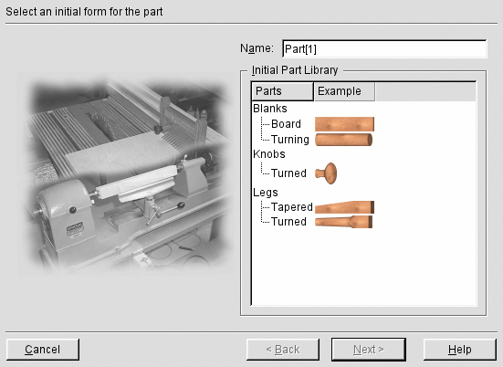
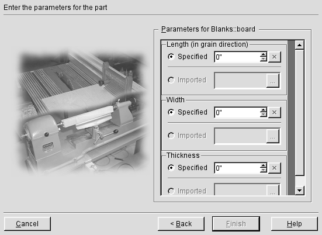
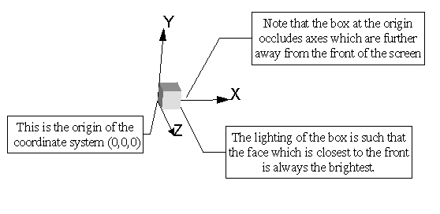
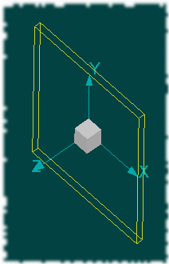
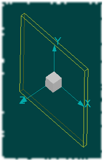
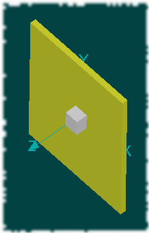
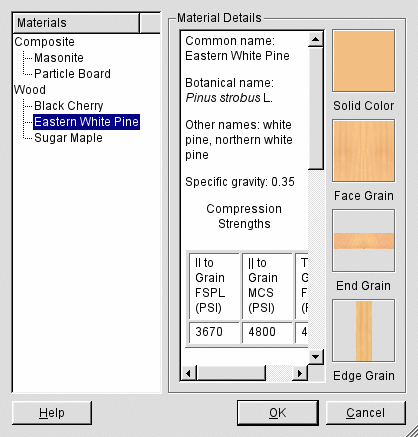
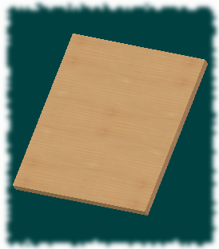
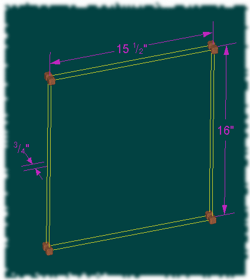

After you have created enough Sketches to define the general size and shape of the table, it is time to start building the models of the parts which will comprise the solid geometry. Since our table top is going to have breadboard edges, we'll start by constructing the parts which comprise the table top; call this the bill of materials for the table top:
|
Name |
Length (in the grain direction) |
Width |
Thickness |
Quantity |
|---|---|---|---|---|
|
Field |
15 ½” |
16” |
¾” |
1 |
|
Breadboard edge |
16” |
2” |
¾” |
2 |
Create a new Part page (either select the Insert|Part menu option, click on the toolbar button, or use the context menu on the tab bar and select Part). This will bring up the Part Wizard.

The Part Wizard shows the available template forms from the Part Library. There are the two general purpose blanks: a plain rectangular board and a circular cylinder for turning. There are additional, more complicated, forms which, in effect, represent the blanks after a few milling operations. These shapes are predefined in the program and cannot be altered (except for their general parameters).
The field of our table top is a simple rectangular board, so select the Board. Note that you can navigate the list of part templates in a number of ways: you can just click the mouse on the line of interest, you can use the cursor keys to move up and down in the list, or you can type the first letter of the name in the Parts column. In the latter case, if there is more than one entry with the same first letter, repeatedly typing the letter will cycle through all the choices. Change the name of the Part to Field (try pressing Alt+A to navigate to the Name field). Press ENTER (or type Alt+N) or click on Next to go to the next page.
Each of the template parts have a number of parameters which you can specify before the part is created. In the case of the Board, you can specify the length (in the direction of the grain), the width and the thickness. This is shown on the second page of the Part Wizard.

Enter the values from the bill of materials table for the field: Length 15 ½”, Width 16”, and Thickness ¾”. If the values you have entered are valid (i.e., the meet the criteria for a correctly defined board), the Finish button will be activated.
A Tip: How do you know if the value entered in a type-in field is acceptable? This is dependent on Qt to a certain extent. If you move the keyboard focus to a type-in by clicking in it with the mouse and leave the mouse over the type-in while you enter the text of the value, the text will be validated as soon as you move the mouse out of the region of the type-in widget (for example, moving the mouse to click on a new widget). Alternatively, regardless of how the type-in got the focus, pressing the Tab will both move the focus to a new widget and validate the text. You can tell if a value has been validated because the type-in will rewrite your input in the correct format; in general, this means that the units abbreviation will appear. For example, if you typed 15 ½ in the Length field and then pressed Tab, the field would be rewritten to contain 15 ½”.
When you complete specification of the board and select Finish, lignumCAD will create the part page and the solid.
Here, we're looking at the top of the solid in wireframe mode. You can use the either the mouse or the keyboard to adjust the view of the solid. Here's a table of actions.
|
View Action |
Mouse |
Keyboard |
|---|---|---|
|
Spin counter-clockwise about vertical axis |
Left button drag left |
Ctrl+Left arrow key |
|
Spin clockwise about vertical axis |
Left button drag right |
Ctrl+Right arrow key |
|
Spin counter-clockwise about horizontal axis |
Left button drag up |
Ctrl+Up arrow key |
|
Spin clockwise about horizontal axis |
Left button drag down |
Ctrl+Down arrow key |
|
Pan left |
Middle button drag left |
Left arrow key |
|
Pan right |
Middle button drag right |
Right arrow key |
|
Pan up |
Middle button drag up |
Up arrow key |
|
Pan down |
Middle button drag down |
Down arrow key |
|
Zoom out |
Wheel up |
Page Up |
|
Zoom in |
Wheel down |
Page Down |
The object in the middle of the screen represents the origin of the coordinate system in which the solid is defined. Some details to understand about it are described in the figure.

On a Part page, the context menu now has a few additional options.

In addition to the Restore view choice, you can also select from several predefined orientations in Quick Views. Note that picking a quick view only changes the orientation of the view, not the scale. You can also toggle display of the origin coordinate system. Finally, there is an addition display option: Hidden Line. Here is a set of images of the board in the various display options.
|
 Outline |
 Hidden Line |
 Solid |
The field of the top is simple, so there are no further milling operations which need to be performed on it. However, we do need to assign a material to the part. Bring up the Material dialog through the Tools|Material menu option and select Eastern White Pine as the material.

The menu presents the common name, the botanical name and some assorted attributes of the material. It also shows the cosmetic attributes which will be applied to the solid. When the part is shown in Solid mode, the solid will be drawn with the Solid Color. In Texture mode, the program attempts to use OpenGL texture mapping to make the image more realistic.

Once the part is created, it possible to resize it similarly to rectangles in a sketch. If you click on (i.e., activate) the solid, it will show both resize handles and dimensions which can be manipulated. The dimensions shown are the same as the parameters in the part wizard. Here's an example of the top field part in activated mode.

Clicking on the handles and dragging them will resize the solid. Double click on the dimension to bring up its editor.
To finish this tutorial section, create the remaining parts in the table's bill of materials.
|
Part |
Template |
Parameters |
Quantity |
|---|---|---|---|
|
Top field |
Board |
Length 15 ½”, Width 16”, Thickness ¾” |
1 |
|
Breadboard edge |
Board |
Length 16”, Width 2”, Thickness ¾” |
2 |
|
Front skirt |
Board |
Length 13, Width 5 ½”, Thickness: ¾” |
2 |
|
Rear skirt |
Board |
Length 13”, Width 5 ½”, Thickness ¾” |
1 |
|
Side skirt |
Board |
Length 9 ½”, Width 5 ½”, Thickness ¾” |
2 |
|
Leg |
Tapered Leg |
Length 26 ¼”, Top length 7”, Top width 1 ½”, Bottom width ¾” |
4 |
Note: as of lignumCAD version 0.2, you cannot modify a part in any way other than by changing its predefined parameters. lignum Computing, Inc. would appreciate any suggestions for additional functionality.